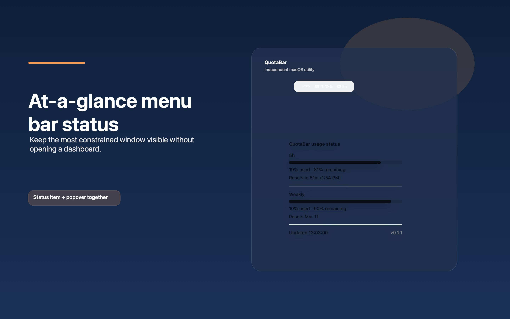
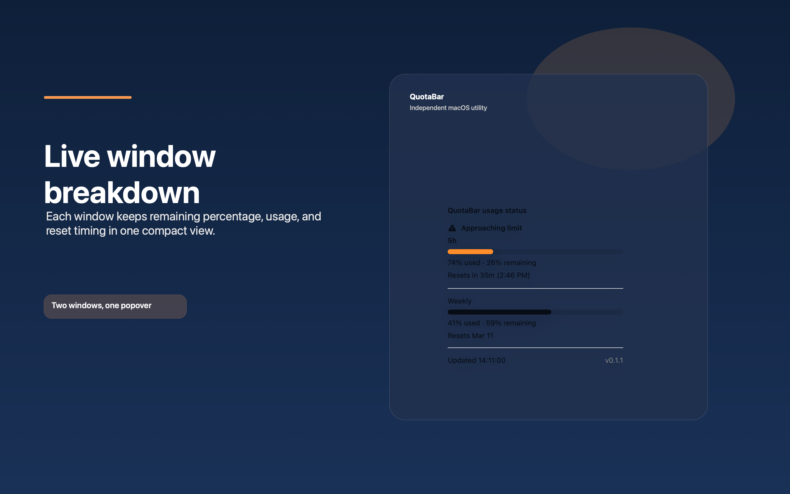
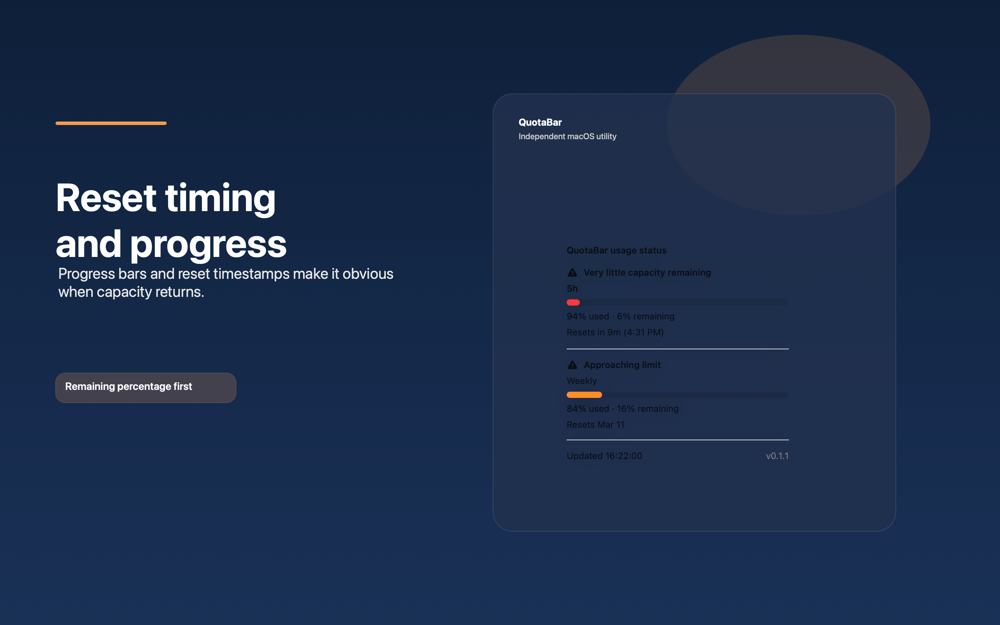

At-a-glance status
The menu bar item always shows the most constrained window first, so the number you care about stays visible.
QuotaBar Support
QuotaBar is a compact macOS utility for monitoring usage windows, reset timing, and remaining capacity without leaving the menu bar.
QuotaBar is an independent macOS utility and is not affiliated with or endorsed by OpenAI.
The menu bar item always shows the most constrained window first, so the number you care about stays visible.
The popover keeps reset timing, remaining percentage, and window labels together in one compact panel.
Use the `Demo scenario` submenu to preview deterministic sample data without any live account dependency.
Setup: the direct-download build can continue to use the existing Codex CLI integration. The App Store build remains gated until a documented, App-Store-safe live data source is implemented.


